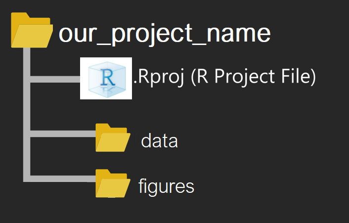
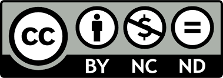

Practical Statistics in Medicine with R
1st Edition
Konstantinos I. Bougioukas, PhD ![]()
Preface

Whom is this textbook for?
This textbook is based on my notes from a series of lectures given for a few years at the Aristotle University of Thessaloniki, Greece. The textbook can be used as support material for practical labs on basic statistics using R at any level from beginner to advanced. It can also be used as a support for self-teaching.
I have paid particular attention to the form of the book, which I think should aid understanding the most common statistical tests using Base R and pipe-friendly functions, coherent with the ‘tidyverse’ design philosophy. The {ggplot2} package and many ggplot2 extensions are the preferred tools of choice for constructing data visualizations in the textbook.
Tip
This textbook assumes that the reader has a basic knowledge of R, tidyverse and introductory statistics. If you want to familiarize yourself with this programming language and statistics, we recommend the books below:
R via RStudio and RStudio Projects
Throughout this textbook we will use R via RStudio. Both programs can be downloaded from  posit. It is also recommended to work with RStudio Projects. This enables to organize our files and switch between different projects without getting the data, scripts, or output files all mixed up. Everything gets read in or saved to the right folder/directory.
posit. It is also recommended to work with RStudio Projects. This enables to organize our files and switch between different projects without getting the data, scripts, or output files all mixed up. Everything gets read in or saved to the right folder/directory.
For our purpose, it is sufficient to consider a simple RStudio Project folder that contains the following subfolders (Figure 1).:
-
data: data files of any kind, such as
.csv,.xlsx,.txt, etc. - figures: plots, diagrams, and other graphs
Reproducibility and License
All sections of this textbook are reproducible as they were made using Quarto® which is an open-source scientific and technical publishing system built on Pandoc.
To learn more about Quarto books visit https://quarto.org/docs/books.
The online version of the textbook is free to use, and is licensed under the Creative Commons Attribution-NonCommercial-NoDerivs 4.0 License. 